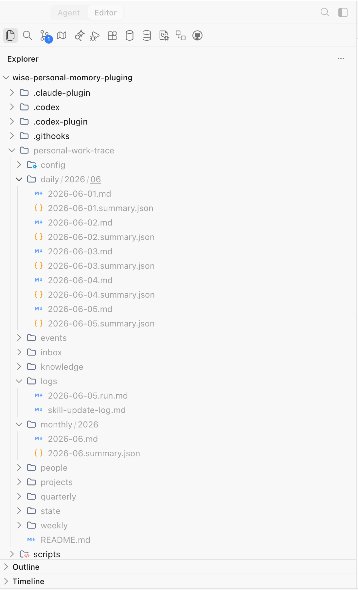
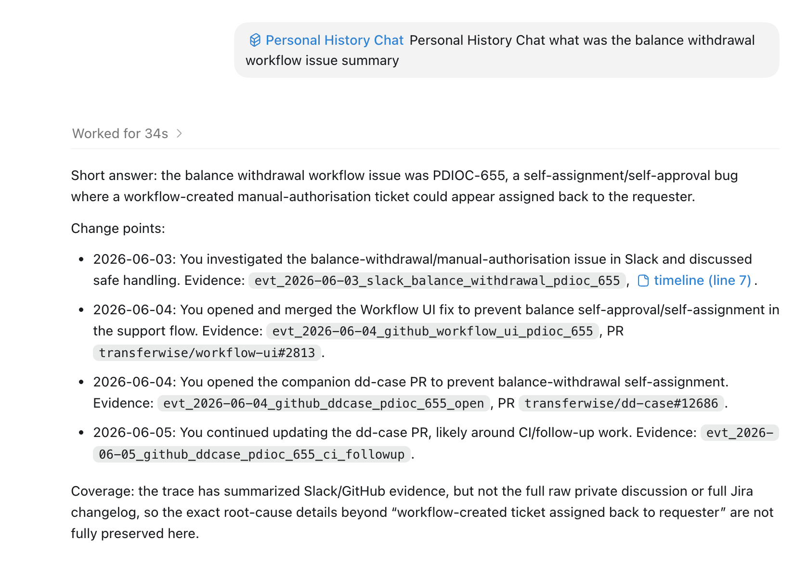
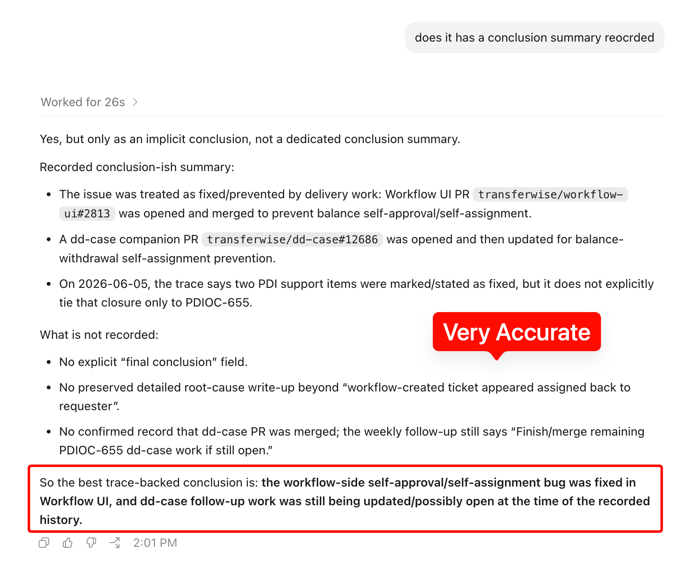
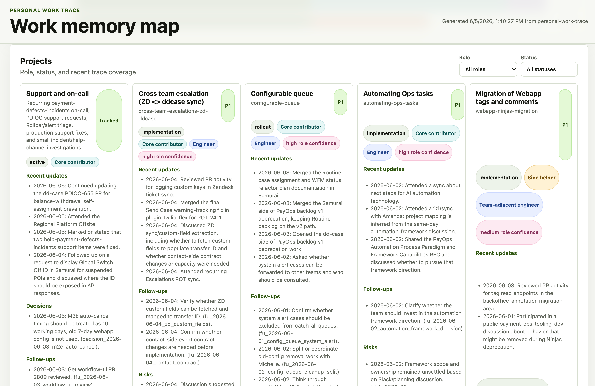
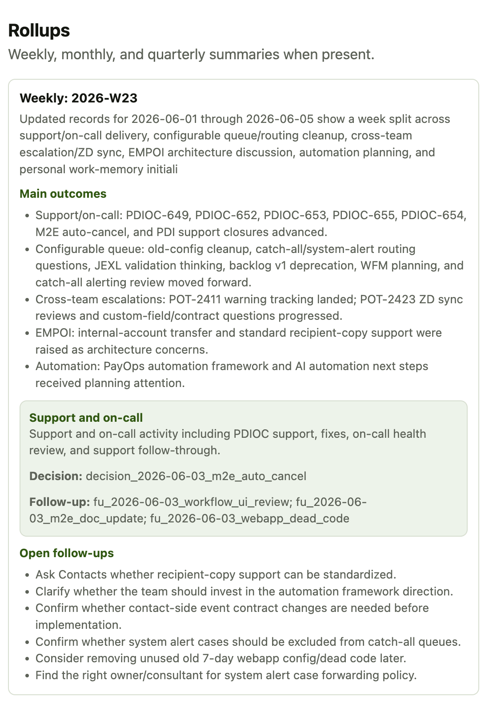

Personal
Work Memory
Evidence-backed work traces for AI agents
The Problem
Your work disappears
into disconnected tools
A unified,
searchable
memory system
01
What It Is
Claude/Codex plugin that maintains evidence-backed work traces
Three skills,
one workflow
02
Core Skills
Init → Memory → Chat
personal-work-memory-init — Seeds trace store or backfills dates
personal-work-memory — Daily records and weekly rollups
personal-history-chat — Query your work history
Key Features
Evidence links • Project mapping • Time travel • Smart rollups
The work trace
is the product
03
Folder Architecture
A local tree agents can read without new infrastructure
personal-work-trace/ ├── inbox/ raw imports and manual daily supplements ├── config/ identity, sources, taxonomy, privacy ├── projects/ active work records and project indexes ├── daily/ dated evidence-backed work journals ├── weekly/ rollups for status, planning, and recall ├── knowledge/ team context, source maps, quarterly plans └── state/ cursors, dedupe indexes, skill snapshots
Tree Design
Optimised for agent lookup, not database purity
Evidence first
Every memory points back to source material or a recorded gap.
Human editable
Markdown and YAML stay easy to inspect, patch, and review.
Incremental
Cursors and dedupe state let each run update only what changed.
Ready in
3 commands
04
Quick Start
Use $personal-work-memory-init to set up my work trace for today
Use $personal-work-memory to update today's record
Use $personal-history-chat to tell me what moved forward last week
Demo the
product
05
Demo
Scan the repo link
Use this as the entry point for the walkthrough.
Demo
The trace appears as a readable local tree

Demo
Raw connector evidence lands in dated imports

Demo
Ask a work-history question

Demo
The answer stays honest about what is recorded

Demo
Generate a map of active work

Demo
Rollups become status-ready summaries

Start building
your memory
Evidence-backed work traces for Claude & Codex